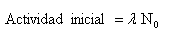

|
La actividad es tanto mayor cuanto mayor sea la constante radiactiva ( l ) y el número de núcleos presentes.
La actividad inicial de un isótopo es mayor inicialmente, siempre que el isótopo que se forme no sea también radiactivo, en cuyo caso tenemos una serie radiactiva.

En esta escena puedes ver de manera cualitativa cómo va disminuyendo la actividad de una muestra radiactiva según va transcurriendo el tiempo.
La actividad de una sustancia depende de la cantidad de muestra y sus unidades son: el Curie y el Rutherford:
1 Curie es la actividad que corresponde a 1 gramo de radio y produce 3,7.1010 desintegraciones / segundo.
1 Rutherford corresponde a 10 6 desintegraciones / segundo.
|